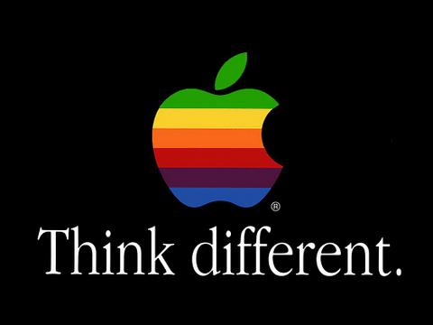

Posted on 25/Sep/2013 by Code-Fu Panda
"Think different" was an advertising slogan for Apple Inc (formerly Apple Computer Inc) in 1997 created by the Los Angeles office of advertising agency TBWA\Chiat\Day. It was used in a television commercial, several print advertisements and a number of TV promos for Apple products. Apple's use of the slogan was discontinued with the start of the Apple Switch ad campaign in 2002.
Significantly shortened versions of the text were used in two television commercials, known as "Crazy Ones", directed by Chiat\Day's Jennifer Golub who also shared the art director credit with Jessica Schulman and Yvonne Smith. The voiceover was by Richard Dreyfuss. It was edited at Venice Beach Editorial, by Dan Bootzin, Chiat\Day's gifted in-house editor. Post-produced by Hunter Conner.
The words "think different" were created by Chiat\Day art director Craig Tanimoto. The text of the various versions of this commercial was written by Rob Siltanen and Ken Segall. Music was composed by Chip Jenkins for Elias Arts.
The one-minute commercial featured black-and-white footage of 17 iconic 20th century personalities. In order of appearance they were: Albert Einstein, Bob Dylan, Martin Luther King, Jr., Richard Branson, John Lennon (with Yoko Ono), Buckminster Fuller, Thomas Edison, Muhammad Ali, Ted Turner, Maria Callas, Mahatma Gandhi, Amelia Earhart, Alfred Hitchcock, Martha Graham, Jim Henson (with Kermit the Frog), Frank Lloyd Wright and Pablo Picasso. The commercial ends with an image of a young girl opening her closed eyes, as if making a wish. The final clip is taken from the All Around The World version of the "Sweet Lullaby" music video, directed by Tarsem Singh; the young girl is Shaan Sahota, Singh's niece.
The thirty-second commercial was a shorter version of the previous one, using 11 of the 17 personalities, but closed with Jerry Seinfeld, instead of the young girl. In order of appearance: Albert Einstein, Bob Dylan, Martin Luther King, Jr., John Lennon, Martha Graham, Muhammad Ali, Alfred Hitchcock, Mahatma Gandhi, Jim Henson, Maria Callas, Pablo Picasso, followed by Jerry Seinfeld. This version aired only once, during the season finale of Seinfeld.
Another early example of the "Think Different" ads was on February 4, 1998, months before taking the colors out of the logo, where a commercial aired with a snail carrying an Intel Pentium II chip on its back moving slowly, as the Power Macintosh G3 claims that it is twice as fast as Intel's Pentium II Processor.
Apple's CEO Steve Jobs ordered the creation of a campaign that reflected the philosophy he thought had to be reinforced within the company he once co-founded, but which was struggling at the time he came back:
Steve Jobs in interview for PBS' 'One Last Thing' documentary, 1994:
"When you grow up you tend to get told the world is the way it is and your life is just to live your life inside the world. Try not to bash into the walls too much. Try to have a nice family life, have fun, save a little money. That's a very limited life. Life can be much broader once you discover one simple fact, and that is - everything around you that you call life, was made up by people that were no smarter than you. And you can change it, you can influence it, you can build your own things that other people can use.
The minute that you understand that you can poke life and actually something will, you know if you push in, something will pop out the other side, that you can change it, you can mold it. That's maybe the most important thing. It's to shake off this erroneous notion that life is there and you're just gonna live in it, versus embrace it, change it, improve it, make your mark upon it.
I think that's very important and however you learn that, once you learn it, you'll want to change life and make it better, cause it's kind of messed up, in a lot of ways. Once you learn that, you'll never be the same again."
The original long version appeared on posters made by Apple.
"Here's to the crazy ones. The misfits. The rebels. The troublemakers. The round pegs in the square holes.
The ones who see things differently. They're not fond of rules. And they have no respect for the status quo. You can quote them, disagree with them, glorify or vilify them.
About the only thing you can't do is ignore them. Because they change things. They invent. They imagine. They heal. They explore. They create. They inspire. They push the human race forward.
Maybe they have to be crazy.
How else can you stare at an empty canvas and see a work of art? Or sit in silence and hear a song that's never been written? Or gaze at a red planet and see a laboratory on wheels?
We make tools for these kinds of people.
While some see them as the crazy ones, we see genius. Because the people who are crazy enough to think they can change the world, are the ones who do."
Upon release, the "Think Different" Campaign proved to be an enormous success for Apple and TBWA\Chiat\Day. Critically acclaimed, the spot would garner numerous awards and accolades, including the 1998 Emmy Award for Best Commercial and the 2000 Grand Effie Award for most effective campaign in America. Even the American rap group, the Wu Tang Clan named one of their albums "Think Differently Music: Wu-Tang Meets the Indie Culture" and the cover shows the sign of the group colored like the apple logo.
In retrospect, the new ad campaign marked the beginning of Apple's re-emergence as a marketing powerhouse. In the years leading up to the ad Apple had lost market share to the Wintel ecosystem which offered lower prices, more software choices, and higher-performance CPUs. Worse for Apple's reputation was the high-profile failure of the Apple Newton, a billion-dollar project that proved to be a technical and commercial dud. The success of the "Think Different" campaign, along with the return of Steve Jobs, bolstered the Apple brand and reestablished the "counter-culture" aura of its earlier days, setting the stage for the immensely successful iMac personal computer and later the Mac OS X operating system.
Copied everything from wiki page of Think Different